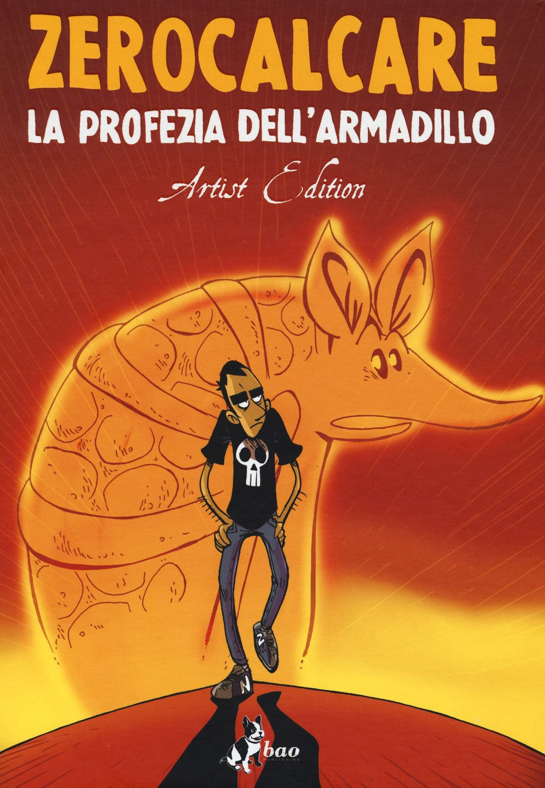

Spider-Man
New York
Dai Masterworks di Lee e Ditko allo Spider-Verse: il mio ragno di quartiere.From Lee and Ditko's Masterworks to the Spider-Verse: my friendly neighborhood spider.
Sfoglia la collezioneBrowse the collection
Batman
Gotham City
Dalla Golden Age a Il ritorno del Cavaliere Oscuro: le storie che hanno
definito l'uomo pipistrello.From the Golden Age to The Dark Knight Returns: the stories that
defined the Bat.
Sfoglia la collezioneBrowse the collection
Wolverine & X-Men
MutantiMutants
Da Arma X a Vecchio Logan, passando per Giorni di un futuro passato.From Weapon X to Old Man Logan, by way of Days of Future Past.
Sfoglia la collezioneBrowse the collection
Zerocalcare
Rebibbia
Dalla Profezia dell'armadillo a Kobane Calling: gli albi che mi hanno
fatto ridere e riflettere.From La profezia dell'armadillo to Kobane Calling: the books that made me
laugh and think.
Sfoglia la collezioneBrowse the collection
Rat-Man
Leo Ortolani
I Color Special del supereroe più improbabile del fumetto italiano.The Color Specials of Italian comics' most unlikely superhero.
Sfoglia la collezioneBrowse the collection